大鵬灣環灣自行車道，同時擁有「潟湖景緻」、「漁村風情」、「碧海藍天」與「紅樹林自然生態溼地」等特色，大部分車道均是自行車專用道，值得閣家同遊！
大鵬灣自行車道地圖 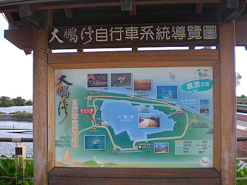
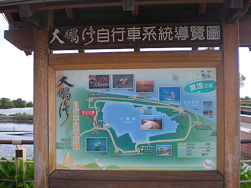
我們用自行車架將4輛車載到大鵬灣。車友也可以選擇開車去，到大鵬灣租腳踏車，腳踏車出租店就在我們停車場的旁邊，預計河東獅下次至大鵬灣辦出遊活動，獅友可自己載腳踏車去，也以去開車到達大鵬灣後，再到當地租車！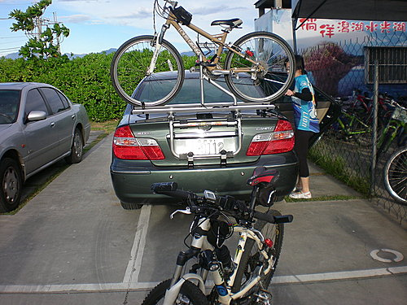
河東獅家族出發了！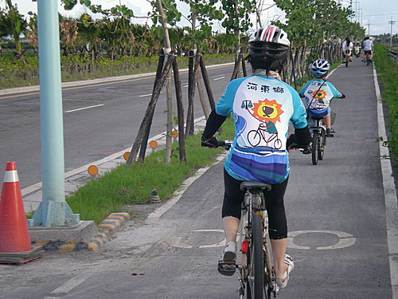
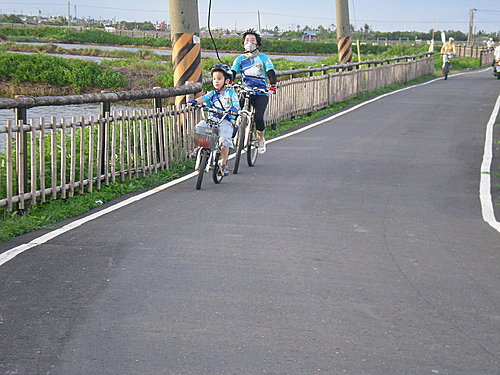
我們在景觀橋附近，稍微休息一下！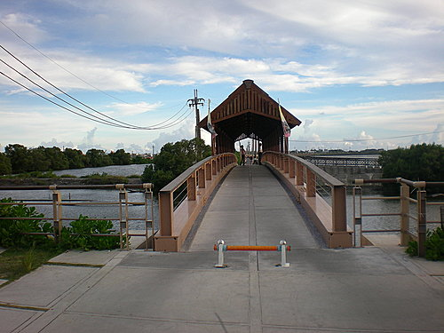
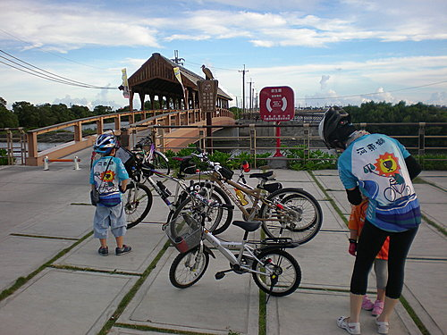
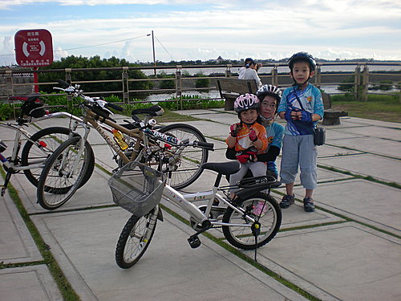
在海堤上騎著車吹著海風，享受著夕陽的餘暉，女兒問我：「爸爸，這是腳踏車的高速公路嗎？」
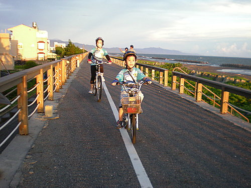
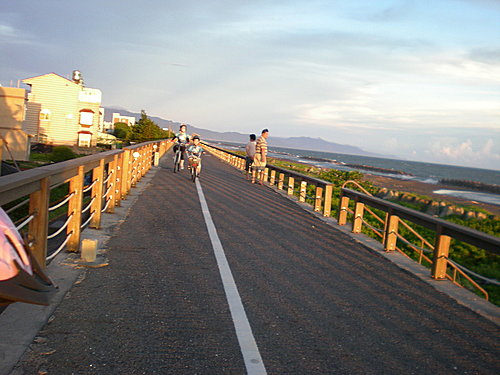
我們到附近的7-11享用晚餐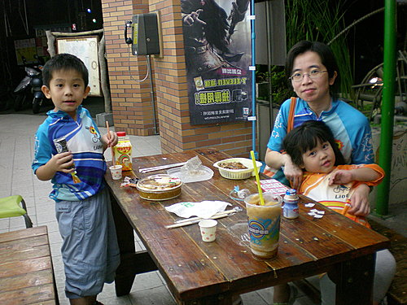
康樂股長 於 2008-07-08 20:27:17 回應
美味可口的東港海鮮， 再加上風景如畫的鐵馬道， 確實可列入河東獅秋之旅的騎乘路線。 各位看倌意下如何呢？